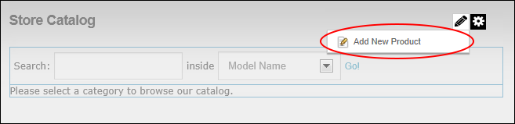
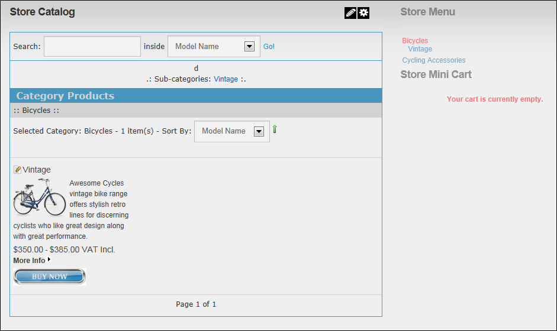

Adding a Product (Product Manager)
How to add a product to the store using the Store Catalog module.
Product Managers and Catalog Managers.
Prerequisite. If you wish to add customers who purchase this product to a Security Role, you must create this role before beginning this tutorial.
- On the Store Catalog module, select Edit
 >
>  Add New Product from the module actions menu.
Add New Product from the module actions menu.

- Complete Steps 3 onwards in "Adding a Product" or "Adding a Virtual Product". Once you have completed all steps, click on the name of the category that the product was added to view the newly added product in the Store Catalog.
